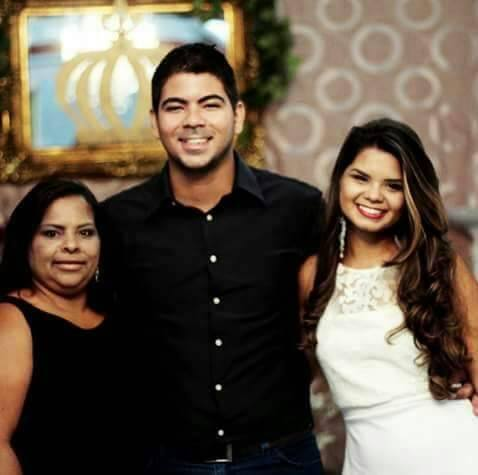
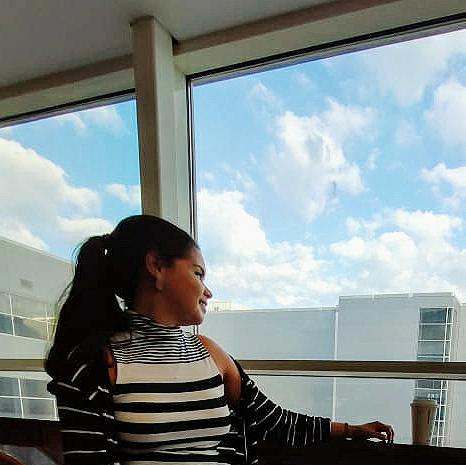

Por mais mulheres na tecnologia

Maria é uma mulher Preta,nascida no interiror de PE, casada e mãe de dois filhos Susane e Bruno.
"O maior desafio dela sempre resistir, pois desistir não era uma opção".
Sua História
Segundo a mais velha de 16 irmãos, filha do senhor Vardo e Maria Luiza, esses cortadores de cana. Eles viviam proximo arroado da usina de açucar. Por eles não terem condições de não cuidarem de todos os filhos, desses 16 filhos, atualmente tem 9 vivos. muitos deles foram entregue aos seus familiares, onde uma delas foi a Maria. Maria foi destinada a sua tia Luzia na cidade de Palmares na mata sul de Pernambuco. Logo ao chegar lá a sua tia o obrigou a trabalhar onde a Maria tinha apenas seus 9 anos onde a mesma teve que trabalhar como domesticas em algumas casas. Maria ficava com saudades de seus irmãos, mas pelas suas condições teve que aprender a viver dessa forma. Nem teve mesmo tempo para estudar. Aos 15 anos conheceu um jovem rapaz chamado Rafael que hoje é seu esposo e que com ele teve seus dois filhos, criou eles em uma filosofia que a educação liberta para que seus filhos pudessem alcançar todos os seus sonhos quando ela não teve essa oportunidade, com isso seus filhos, atraves da educação conseguiriam realizar voos altos e hoje se tornaram o que ela sempre esperou deles.

- Autora: Susane Silva
- Aluna da Turma 10 {reprograma} Link para Github